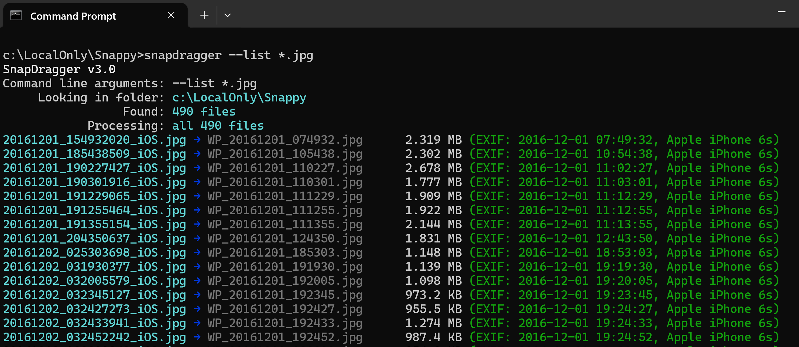
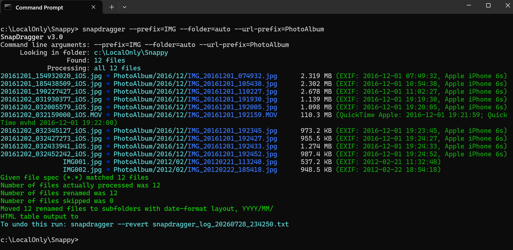
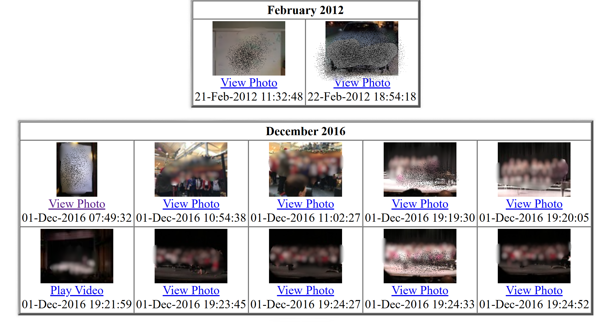
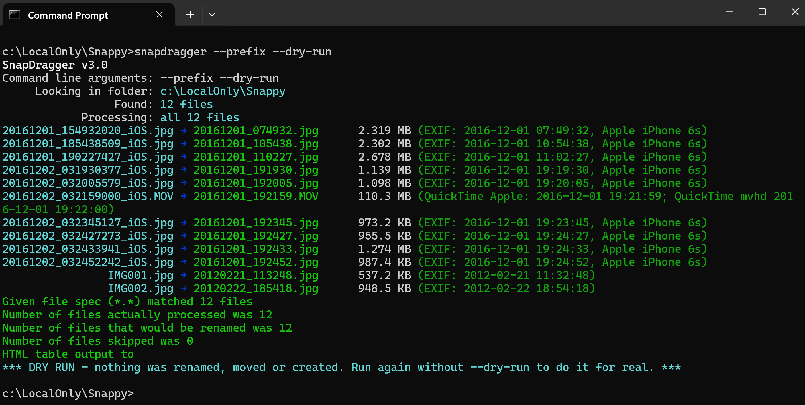

SnapDragger
The app can be installed from:
Requires Windows 10 version 1809 or later, or Windows 11. Both x86 and x64 are supported. Run it from Command Prompt, PowerShell or Windows Terminal.
Tidy up a folder of photographs and video clips from the command line. SnapDragger reads the date each picture was actually taken from inside the file, renames everything to sortable timestamped names, files them into year and month folders, and builds an HTML contact sheet of the whole library. Nothing is renamed unless you ask for it, every run can be previewed first, and every run can be undone.
Windows Command Line JPEG · HEIC · AVIF · PNG MOV · MP4 · WMV · AVI
--list over a folder of 490 photographs. Each line shows the file as it is now, the name SnapDragger would give it, its size, and — in green — the date it found inside the file and the camera that took it. Nothing has been changed.
SnapDragger turns a folder full of photo files with names like DSC00123.JPG or IMG_4471.HEIC into something you can actually find things in. It reads the moment each photograph was taken from the file itself rather than trusting the timestamp your computer shows, renames each one to a name that sorts into chronological order, files it under the year and month it belongs to, and optionally writes an HTML page of thumbnails for the whole collection.
It is a command line tool. There is no window — you point it at a folder and it tells you, line by line, what it found and what it did with it. You can also do a safety dry run where SnapDragger shows you exactly what it will do before anything is changed.
The most up to date version of this information will always be the online version.
A photograph taken by a modern camera or phone “knows” when it was taken. The camera saves that information inside the image file in a “packet” that SnapDragger examines:
Where a file carries no date of its own, its filesystem timestamp is used instead, and the summary line says which, so you always know what you are looking at.
Video is a little trickier. A movie header often records UTC and says nothing about where the camera was, so a clip filmed on holiday comes out hours wrong if it is simply converted to the timezone the computer is sitting in right now. SnapDragger works the offset out per recording: from a nearby clip that carries a suitable tag, which states the offset outright, or, failing that, from the photographs taken around the same time. A folder covering a trip abroad and the weeks either side of it comes out right throughout.
Whatever you choose, the summary line, the HTML links and the place the file actually ends up all agree:

A real run: --prefix=IMG --folder=auto --url-prefix=PhotoAlbum. Twelve files taken in December 2016 and February 2012 are renamed and filed into PhotoAlbum\2016\12 and PhotoAlbum\2012\02 according to the date inside each one — note the .MOV clip, whose date came from its QuickTime tags. The last line is the command that would put it all back again.
SnapDragger optionally writes an HTML page with a table for each month, in date order, each cell holding a thumbnail that links to the picture itself.

The page produced by the run above. Each month gets its own table, oldest first, and every cell is captioned with the moment the picture was taken. A clip is labelled Play Video rather than View Photo, and its thumbnail is a frame taken from a few seconds in. (Faces blurred here for the website.)
The page is rebuilt from what is on disk rather than from whatever this particular run happened to be given, so it always describes the whole library. Add more photographs later, run it again, and only the months you actually added to are rebuilt — every other month is carried through exactly as it was. Thumbnails are made for anything on the page that lacks one, so an older file never shows a broken picture.
Thumbnails all share a height so a row of them lines up, and the width follows each picture's own shape, so a portrait photograph is never squashed into a landscape box. The Exif orientation is honoured, which matters more than you might think — how often have you seen people's photos stored sideways and had to awkwardly tilt your head to view them?
--scanfolders builds the page from the folders and does nothing else. It reads everything under the folder given, however deep, and writes a table per month covering all of it. Nothing is renamed and nothing is moved. Useful for indexing a library that is already tidy, or for building a fresh page after moving things about by hand.

A --dry-run: every name each file would be given is shown in green, and the run finishes by saying plainly that nothing was renamed, moved or created. Run it again without --dry-run to do it for real.
And when a run has done something you did not want, it can be undone. Every run that moves anything writes a plain-text log beside the files and finishes by telling you how to use it:
Undoing puts every file back under its old name, removes the thumbnails that run created, and takes away any folder it emptied. A file already sitting where one belongs is left alone rather than written over, and reported. --dry-run works here too, showing everything that would go back without touching anything.
Every option has a spelled-out name; six of them also keep a single letter. Run snapdragger --help for the full built-in help, which is where this summary comes from.
Coloured output can be turned off by setting the NO_COLOR environment variable.
Look at what is in a folder, changing nothing:
Rename by the date inside each file, with an IMG prefix, and file everything into the YYYY\MM tree:
See exactly what that would do, without touching anything:
Try it on just the first ten files before committing to the lot:
Rename a folder holding both originals and reduced copies, keeping the two apart rather than letting them collide:
Start the name with the year rather than a prefix, and keep the _iOS that the phone put on the end:
Only files that carry their own date, skipping the rest:
Build a contact sheet for a library that is already tidy, changing nothing else:
Read from inside JPEG, HEIC, AVIF, MOV, MP4, M4V, WMV and AVI files, not from the timestamp Windows shows.
Renames to <prefix>_YYYYMMDD_HHMMSS, so a folder listing is a timeline.
Files everything into a YYYY\MM tree, optionally underneath a folder of your own choosing.
An HTML page with one table per month, in date order, each thumbnail linking to the picture itself.
Add more photographs later and only the affected months are rebuilt; the rest of the page is untouched.
Pictures taken sideways are shown the right way up, and each thumbnail is sized to its own picture's shape.
Works out a video's offset from UTC per recording, so a trip abroad no longer comes out hours wrong.
--dry-run shows exactly what would happen, clash suffixes and all, without touching a thing.
Every run that moves anything writes a log, and --revert puts every file back where it came from.
Compares files in full, not by checksum, and offers to send the copies to the Recycle Bin.
--list reports on a folder and changes nothing — and says so if an option would.
Colour-coded lines telling you where each date came from and what took the picture, in lined-up columns.
The app can be installed from:
Requires Windows 10 version 1809 or later, or Windows 11. Both x86 and x64 are supported. Run it from Command Prompt, PowerShell or Windows Terminal.
SnapDragger does everything except making thumbnails without any help. For thumbnails it uses two free tools, neither of which is included. It finds them on your PATH, so they need to be somewhere Windows looks:
With only ImageMagick installed, pictures get their thumbnails and movies do not. With neither, no thumbnails are made at all and the run carries on regardless — the page is still written, and the links to the pictures themselves still work.